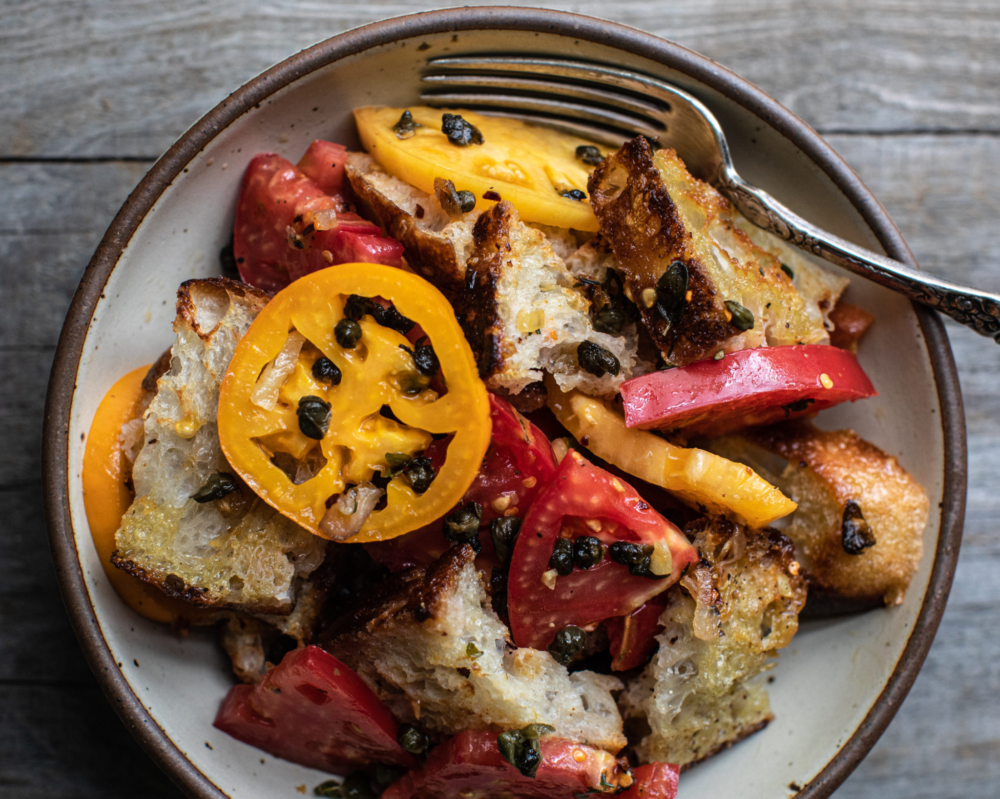

Virginia's Recipe Page Research
Fried Caper Panzanella

A vegan spin on the classic Panzanella salad featuring punchy fried capers, a savory homemade shallot dressing,
toasted foccacia slices, and heirloom tomatoes.
This salad is a delicious addition to a dinner party or to bring to a friend's house. This vegan adaptation of the classic Tuscan Panzanella Salad is full of flavor and different textures and can easily be prepared in under 15 minutes! It's best to assemble the moist and dry components just before serving as the bread will become soggy if left combined. The heirloom tomatoes are at peak flavour during late summer to early fall, but if none are available, Roma tomatoes make a great substitution.
The only common allergen is the gluten in the foccacia, which can be switched for your favorite
gluten-free loaf.
| Serves up to 4 |
Prep time: 15 minutes |
Allergen: Gluten |
Ingredients
- 3 tablespoons olive oil
- 1/2 cup capers, drained and patted dry
- 7 oz sourdough focaccia bread, thinly sliced into 2-inch pieces, 1/2 inch thick
- 3 heaping tablespoons vegan butter
- 1 large shallot, sliced
- 3 cloves garlic, chopped
- 1 teaspoon crushed red pepper flakes
- 1 tablespoon fresh oregano leaves
- 1 tablespoon fresh thyme leaves
- Fresh cracked black pepper & salt to taste
- 2 pounds heirloom tomatoes, sliced into 2-inch pieces, 1/2 inch thick
Directions
- In a large skillet, add 3 tablespoons of olive oil and bring to medium-high heat. Once hot, throw in the capers and cook for 6-8 minutes, stirring every so often, until crispy. Taste one to make sure they are crispy and then remove from the skillet. Set them aside to garnish at the very end.
- Next, place sliced bread in the same skillet with leftover oil and pan-fry until golden brown on both sides, about 3 minutes on each side. Drizzle in a little bit more oil, if needed. You want the slices to get toasty brown but still remain somewhat chewy on the inside. Once done, add the bread to a beautiful large salad bowl and set aside.
- For the dressing, in a separate small pan, add the butter and bring to medium-high heat. Throw in the shallots, garlic, crushed red pepper flakes, oregano leaves, thyme leaves, and a sprinkling of salt and pepper. Bring to a sizzle and cook for a few minutes until the shallots and garlic are tender and the oregano leaves are crisped and curled. Remove from heat and set aside
- Time to assemble! Add the sliced tomatoes to the large salad bowl with bread and gently toss. Add a few splashes of red wine vinegar (about 1 tablespoon). Using a spoon, spread the dressing over the bread and tomatoes and then pour every last drop out. Gently toss again. Right before serving, sprinkle the fried capers over the top and a bit of flaky salt, to taste. Eat immediately.